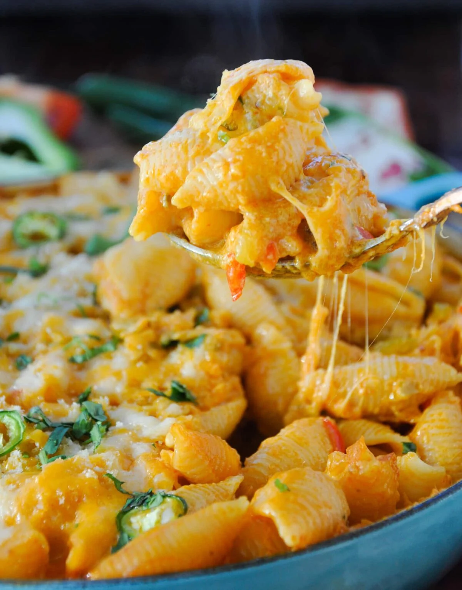

Ingredients

- 2 cups pasta
- 1 tbsp oil
- Mustard seeds
- Curry leaves
- 1 tbsp garlic
- 8 oz mushroom sliced thick
- 1 medium onion chopped
- Green chilies
- Salt
- Black pepper
- Red chili flakes
- 3 tbsp soy sauce
- 3 tbsp ketchup
- 1/2 red and 1/2 green bell peppers
- 1 cup chopped spinach
- 1 tbsp vinegar white
- Cilantro
- 1.5 cup cheese (any, preferably cheddar)
- Breadcrumbs for topping
- Spray oil
- Some butter
Instructions
- Heat oil; add mustard and curry leaves.
- Add garlic and saute for 30 seconds.
- Add mushrooms, sprinkle salt to dehydrate them, and keep on high while stirring continuously.
- Add onions and bell peppers.
- Add black pepper and chili flakes.
- Saute for 2-3 minutes.
- Add vinegar, ketchup, and soy sauce.
- Saute for 1-2 minutes.
- Add cilantro (chopped) and spinach (chopped).
- Spray oil on casserole dish.
- Add pasta to vegetables and mix it very well.
- Turn stove off and add cheese; toss fast and add to casserole dish.
- Add breadcrumbs and put 4 blocks of butter.
- 350 degrees for 10 minutes and broil for last 2 minutes.